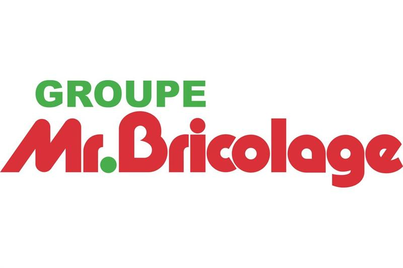
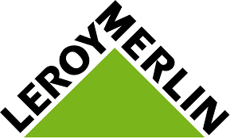

Présentation

Dans le cadre d'une reconversion professionnelle, je suis un cursus BACHELOR Informatique, "Développeur Concepteur FullStack" en 3 années.

La 1ère année se déroule dans les locaux de "Campus Academy", les deux années suivantes se dérouleront en alternance, dans le cadre d'un contrat de professionnalisation.

Auparavant "Conseiller de Vente spécialisé" puis "Gestionnaire de Rayon" en Grand Magasin de Bricolage (Leroy Merlin, Mr.Bricolage), j'ai décidé de me reconvertir dans un domaine qui allie à merveille, passion et avenir.
Au travers de ces différentes expériences, j'ai pu aquérir et développer de nombreuses compétences (gestion d'équipe, relation client, rigueur, esprit d'équipe...).

